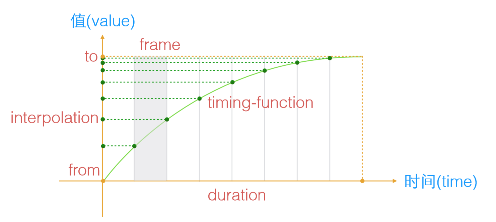

SVG的动画
1. 动画原理
动画实际上就是值关于时间的一个函数。在这个函数中，包含起始值(from)和结束值(to)，经过的时间一般被称为持续时间(duration)。动画执行时的曲线就是动画函数(timing-function)。但是，在计算机中，不可能穷尽每一时刻的状态，而是取多个采样点，每个采样点就叫做帧。要让动画流畅显示，一般地需要每秒60帧(frame)。

2. SMIL for SVG
2.1 SMIL
SMIL全称Synchronized Multimedia Integration Language，同步多媒体集成语言。在SVG中实现动画主要通过SMIL实现，SVG的动画元素是和SMIL开发组合作开发的。SMIL开发组和SVG开发组合作开发了SMIL动画规范，在规范中制定了一个基本的XML动画特征集合。SVG吸收了SMIL动画规范当中的动画优点，并提供了一些SVG继承实现。可惜的是，Chrome 45开始弃用了SMIL，以利于CSS动画以及Web动画。
SMIL允许你做这些事情：
- 动画元素的数值属性（X，Y,…）
- 动画属性变换（平移或旋转或缩放）
- 动画颜色变换
- 沿着指定路径运动
它的强大之处是无需使用CSS、JS，只需要一个动画元素即可实现，它们允许直接写在基础图形元素或者组元素<g>的内部以表示针对该图形进行动画。
2.2 动画元素
SMIL定义了以下几个Animation元素：
- <set>
- <animate>
- <animateColor>
- <animateTransform>
- <animateMotion>
<set>意思是设置，此元素没有动画效果。但是可以实现基本的延迟功能。也就是说，可以在特定时间之后修改某个属性值（也可以是CSS属性值）。实例：矩形会在3s后从x=”160” 移动到x=”60”的位置。例子可能需要在JS Bin中打开才有效果。
<svg xmlns="http://www.w3.org/2000/svg" width="600" height="200">
<rect x="100" y="100" width="60" height="60" fill="red">
<set attributeName="x" attributeType="XML" to="60" begin="3s" repeatCount="indefinite"/>
</rect>
</svg>
<animate>基础动画元素。实现单属性的动画过渡效果。实例：矩形沿着X轴平移
<svg xmlns="http://www.w3.org/2000/svg" width="600" height="200">
<rect x="100" y="100" width="60" height="60" fill="red">
<animate attributeName="x" from="200" to="10" begin="0s" dur="1s" repeatCount="indefinite" />
</rect>
</svg>
<animateColor>颜色动画，其可以实现的功能与效果，animate也可以做到，因此，该元素已经被废弃。
<animateTransform>实现 transform 变换动画效果。实例，矩形快速变大：
<svg xmlns="http://www.w3.org/2000/svg" width="600" height="200">
<rect x="200" y="100" width="60" height="60" fill="red"></rect>
<animateTransform attributeName="transform" begin="0s" dur="3s" type="scale" from="1" to="2" repeatCount="indefinite"></animateTransform>
</svg>
<animateMotion>元素可以让SVG各种图形沿着特定的 path 路径运动。实例：矩形按照既定路径运动
<svg xmlns="http://www.w3.org/2000/svg" xmlns:xlink="http://www.w3.org/1999/xlink" width="100%" height="400" viewBox="-200 -400 800 800">
<rect x="-25" y="-25" width="50" height="50" fill="rgba(0,255,255,.6)">
<animateMotion path="M 0 0 L 100 100 A 200 200 0 1 0 0 -100" dur="3s" rotate="auto" fill="freeze" repeatCount="indefinite"></animateMotion>
</rect>
<path id="motion-path" d="M 0 0 L 100 100 A 200 200 0 1 0 0 -100" fill="none" stroke="gray"></path>
</svg>
我们可以将他们组合使用：
<svg xmlns="http://www.w3.org/2000/svg" xmlns:xlink="http://www.w3.org/1999/xlink" width="100%" height="400" viewBox="-200 -400 800 800">
<circle cx="0" cy="0" r="5" fill="red"></circle>
<circle cx="0" cy="-100" r="5" fill="yellow"></circle>
<rect x="-25" y="-25" rx="5" ry="5" width="50" height="50" fill="red">
<animateMotion id="clockwise" path="M 0 0 L 100 100 A 200 200 0 1 0 0 -100" dur="3s" rotate="auto" begin="0; counterclockwise.end + 1s" fill="freeze" repeatCount="indefinite"></animateMotion>
<animateMotion id="counterclockwise" path="M 0 -100 A 200 200 0 1 1 100 100 L 0 0" dur="3s" begin="clockwise.end + 1s" rotate="auto" fill="freeze" repeatCount="indefinite"></animateMotion>
<animate id="toYellow" attributeType="XML" attributeName="fill"
begin="0; toRed.end + 1s"
from="red" to="yellow" dur="3s" fill="freeze" repeatCount="indefinite"></animate>
<animate id="toRed" attributeType="XML" attributeName="fill"
begin="toYellow.end + 1s"
from="yellow" to="red" dur="3s" fill="freeze" repeatCount="indefinite"></animate>
</rect>
<path id="motion-path" d="M 0 0 L 100 100 A 200 200 0 1 0 0 -100" fill="none" stroke="gray"></path>
</svg>
3. 元素参数详解
3.1 attributeName = <attributeName>
需要变化的元素属性名称：
可以是元素直接暴露的属性，例如，对于反复出现的矩形对应的 <rect> 元素上的 x， y或者rx，ry
还可以是CSS属性。例如，透明度 opacity。
3.2 attributeType = “CSS | XML | auto”
attributeType支持三个固定参数，CSS、XML、auto，用来表示attributeType属性值的列表。x,y以及transform就属于XML；opacity就属于CSS；auto为默认值，自动判别的意思，实际上县当成CSS处理，如果发现不认识，直接XML类别处理。因此如果不确定某属性是XML还是CSS类别的时候设置为auto。虽然如此，为了浏览器性能最佳，还是尽量区分类别。
3.3 from，to，by，values
上面的4个属性是一个家族的，他们解决的问题是，从哪里来？到哪里去？怎么去？去干什么？
- from = “value” ：动画的起始值。
- to = “value” ：指定动画的结束值。
- by = “value” ：动画的相对变化值。
- values = “list” ：用分号分隔的一个或多个值，可以看出是动画的多个关键值点。
from，to，by，values虽然是一个家族的，但是相互之间还是有制约关系的：
如果动画的起始值与元素的默认值是一样的，form参数可以省略。
（不考虑values）to、by两个参数至少需要有一个出现，否则没有动画效果。to表示绝对值，by表示相对值。拿位移举例，如果from=”100”，to=”160”则表示移动到160这个位置，但是by=”160”表示100+160=260，表示移动到260的位置。
如果to，by同时出现，则by打酱油，只是别to。
如果to，by，values都没设置，自然没动画效果。如果任意（包括from）一个属性的值不合法，严格来说是没有动画效果的。但是Chrome有容错机制，可能会出现动画。
values可以是一个或多个值。当values的值设置并被识别时，from，to，by的值都会被忽略。
values的功能就是实现多点之间动画。而from，to，by只能实现两个点的切换。实例，矩形来回移动：
<svg xmlns="http://www.w3.org/2000/svg" width="100%" height="400" viewBox="-200 -400 800 800">
<rect x="-25" y="-25" rx="5" ry="5" width="50" height="50" fill="red">
<animate attributeName="fill" values="red;green;blue;black" dur="4s" fill="freeze" repeatCount="indefinite" />
<animate attributeName="x" values="0;300;100;500" dur="4s" fill="freeze" repeatCount="indefinite"/>
</rect>
</svg>
总结为五个动画：from-to动画、from-by动画、to动画、by动画、values动画。
3.4 begin，end
begin指动画开始的时间，看上去很简单。例如begin=”3s”只是最基本的表示方式。
begin的定义是分号分隔的一组值。例如begin=”3s;5s”表示的是3s之后动画走一下，5s的时候再走一下（如果之前的动画没走完，会立即停止并从头开始）
SVG Animate中的时间表示
常见单位有”h” | “min” | “s” | “ms”,以上单位都是英文单位的缩写。
时间值支持小数写法，因此90s也可以用1.5min表示。时间值还支持hh:mm:ss这种写法，因此，90s我们也可以使用01:30表示。
还有一点，十进制的小数值是秒的浮点定义，什么意思呢？例如 begin=”1.5” 没有单位，这里的小数点表示秒，也就是 1.5s的意思。所以上面N次出现的begin=3s 也可以简写作 begin=”3”。
begin的单值除了普通的value还有下面这些类别的value：
offset-value 表示偏移值，数值前面有+ 或 - ，指相对于document的begin值；
syncbase-value 基于同步确定的值。语法为：[ID].begin/end +/- 时间值。
例如: 2.6综合实例的begin=”0; counterclockwise.end + 1s” 意思是上一个动画结束1s之后。
event-value 这个表示与时间相关联的值。类似于 ”点击执行该动画“， 语法为：id.event +- time
例如：begin = “circle.click + 2s” 表示点击2s之后执行动画
<svg xmlns="http://www.w3.org/2000/svg" width="100%" height="400" viewBox="-200 -400 800 800">
<circle id="circle" cx="100" cy="100" r="20"></circle>
<rect x="-25" y="-25" rx="5" ry="5" width="100" height="100" fill="red">
<animate attributeName="x" to="260" begin="circle.click + 2s" dur="2s" />
</rect>
</svg>
需要注意的是，这类与实践关联的SVG需要内联在页面中，否则click什么的都是徒劳。
repeat-value 指重复多少次之后做什么。语法为：[ID].repeat（整数） +/- 时间值。
实例：矩形水平移动两次之后，斜向运动
<svg xmlns="http://www.w3.org/2000/svg">
<rect x="100" y="100" width="100" height="50" fill="#ff5050">
<animate id="x" attributeName="x" to="200" begin="0s" dur="3s" repeatCount="indefinite" />
<animate attributeName="y" to="200" begin="x.repeat(2)" dur="3s" fill="freeze" />
</rect>
</svg>
begin=”x.repeat(2)”指id为x的元素的动画重复2次之后执行该动画。
accessKey-value 定义快捷键。即按下某个按键动画开始。语法为: accessKey(“character”). character表示快捷键所在字符。
实例：按下A键动画执行（firefox上可用，chrome不支持）
<svg xmlns="http://www.w3.org/2000/svg">
<rect x="100" y="100" width="100" height="100" fill="#ff5050">
<animate attributeName="x" to="400" begin="accessKey(a)" dur="3s" repeatCount="indefinite" />
</rect>
</svg>
wallclock-sync-value 指真实世界的时钟定义，时间语法是基于ISO8601中定义的语法，例如：2018-01-23T10:40:54.45+01:00
indefinite 就是这个字符串值，表示无限等待，需要beginElement()方法触，或者指向该动画元素的超链接（SVG中的a元素）触发。
beginElement()触发实例：
<svg id="svg" xmlns="http://www.w3.org/2000/svg" width="600" height="200">
<rect x="100" y="100" width="100" height="100">
<animate attributeName="x" to="400" begin="indefinite" dur="2s">
</rect>
</svg>
<script type="text/javascript">
var animate = document.getElementsByTagName("animate")[0];
if (animate){
document.getElementById("svg").onclick = function(){
animate.beginElement();
}
}
</script>
超链接（a标签）触发实例：
<svg id="svg" xmlns="http://www.w3.org/2000/svg" xmlns:xlink="http://www.w3.org/1999/xlink" width="600" height="200">
<rect x="100" y="100" width="100" height="100">
<animate id="animate" attributeName="x" to="400" begin="indefinite" dur="2s"/>
</rect>
<a xlink:href="#animate">
<text x="100" y="60" fill="#cd0000" font-size="30">点击</text>
</a>
</svg>
end与begin的属性大同小异，此处不再赘述。
3.5 dur
dur有两种值：常规时间值 | “indefinite”
常规时间值就是（3s）这种正常值；indefinite指时间无限。
动画时间无限，实际上就是动画不执行，因此设置“indefinite”跟没有设置dur值一个意思，与dur解析异常一个意思。
3.6 calcMode, keyTimes, keySplines
这几个参数是控制动画节奏，先快后慢还是先慢后快。
calcMode属性支持4个值：discrete 、linear、paced、spline中文意思是：离散，线性、踏步、样条
discrete : from值直接跳转到to的值
linear：animateMotion元素以外元素的calcMode默认值动画从头到尾速率一致。
paced：通过插值让动画的变化步调平稳均匀。仅支持线性数值区域内的值，这样点之间“距离”的概念才能被计算（如position、width、height）。如果“paced”被指定，任何“keyTimes”或“keySplines”的值都将无效。
spline插值定义贝塞尔曲线。spline点定义在keyTimes属性中，每个时间间隔控制点由keySplines定义。
keyTimes = “<list>”
跟上面提到的<list>类似，都是分好分隔一组值。keyTimes意思是关键时间点。前面提到过values也是多个值，这里有一些约定的规则：首先keyTimes值得数目要和values一致，如果是from、to、by动画，keyTimes就必须有两个值。
然后对于linear和spline动画，第一个数值要是0，最后一个是1。最后每个连续的时间值必须比它前面的值大或者相等。
paced模式下，keyTimes会被忽略；
keyTimes定义错误，也会被忽略；
dur为indefinite也会被忽略。
keySplines=”“
keySplines表示的是与keyTimes相关联的一组贝塞尔控制点（默认0 0 1 1）。每个控制点使用4个浮点值表示：x1 y1 x2 y2 ,只有模式是 spline 的时候这个参数才有用，也是分号分隔，值范围0~1，总比keyTimes少一个值。
如果keySplines值不合法或个数不对，是没有动画效果的。
来看一个综合实例:
<svg width="320" height="100" xmlns="http://www.w3.org/2000/svg">
<text font-size="60" y="60" x="160">马
<animate attributeName="x" dur="5s" values="0; 20; 160" calcMode="linear" />
</text>
</svg>
<svg width="320" height="100" xmlns="http://www.w3.org/2000/svg">
<text font-size="60" y="60" x="160">马
<animate attributeName="x" dur="5s" values="0; 80; 160" calcMode="paced"/>
</text>
</svg>
<svg width="320" height="100" xmlns="http://www.w3.org/2000/svg">
<text font-size="60" y="60" x="160">马
<animate attributeName="x" dur="5s" values="0; 80; 160" keyTimes="0; .8; 1" calcMode="linear"/>
</text>
</svg>
<svg width="320" height="100" xmlns="http://www.w3.org/2000/svg">
<text font-size="60" y="60" x="160">马
<animate attributeName="x" dur="5s" values="0; 80; 160" keyTimes="0; .8; 1" calcMode="spline" keySplines=".5 0 .5 1; 0 0 1 1" />
</text>
</svg>
values确定动画的关键位置，keyTimes确定到这个关键点需要的时间，keySplines确定的是每个时间之间的贝塞尔曲线，也就是具体缓动表现。
CSS3写的transition动画效果，也是这么回事，只是values值就两个，所以，keyTimes只能是0；1，贝塞尔曲线就一个，要不ease，要不liner。
3.7 repeatCount，repeatDur
- repeatCount 表示动画执行次数，可以是合法数值或者”indefinite”。
- repeatDur 定义重复动画的总时间。可以是普通时间值或者”indefinite”。
<animate attributeName=”x” to=”60” dur=”3s” repeatCount=”indefinite” repeatDur=”10s” />
动画执行 3 + 1/3 次。因为repeatDur=“10s”
3.8 fill
fill表示动画间隙的填充方式。支持参数有：freeze | remove，其中remove是默认值，表示动画结束直接回到开始的地方，freeze表示动画结束冻住，表示保持动画结束的信息。
3.9 restart
restart这个属性诞生的背景如下：很多动画其触发可能与事件相关，例如，点击圆圈，矩形就跑。而且，似乎每点一次，矩形就动一下。现在，存在这种情况，希望矩形只动一次，之后点击就不动了。这种需求迫使restart参数的出现。
支持的参数有：always | whenNotActive | never
always 是默认值，表示总是，也就是点一次圈圈，跑一次动画。
whenNotActive 表示动画正在执行的时候，不能重启动画。
never 表示执行一次就不再执行。